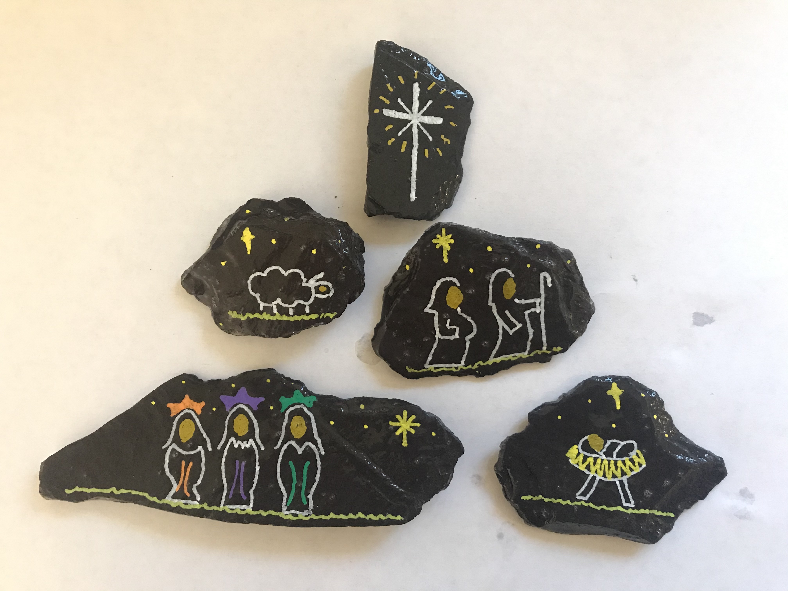
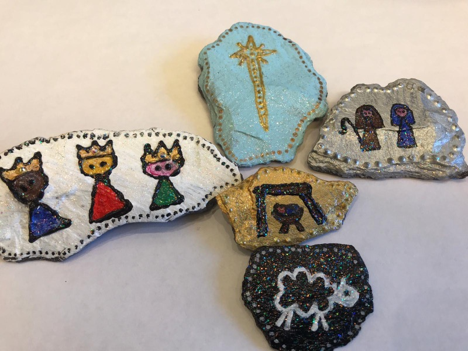
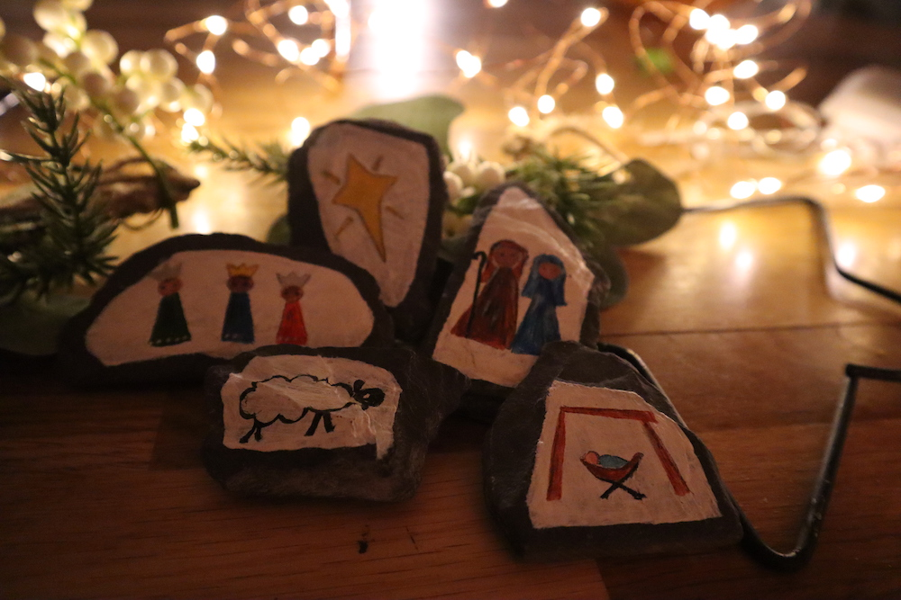
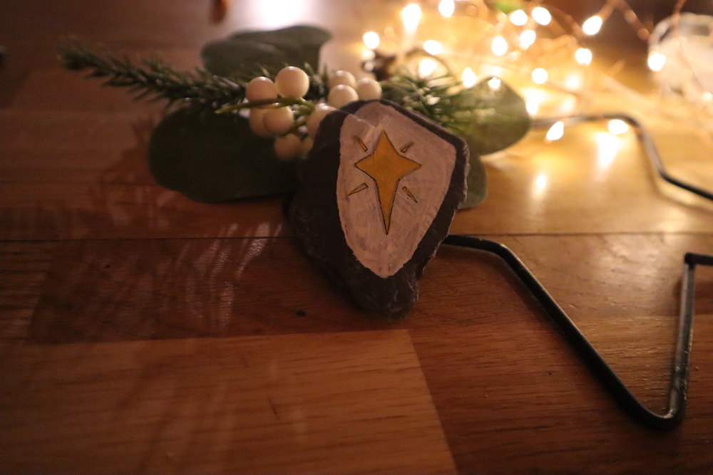
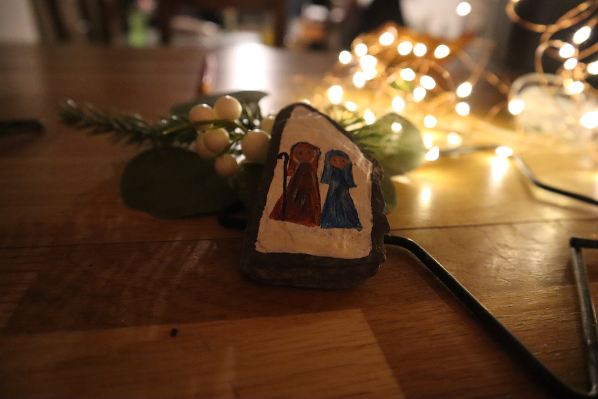
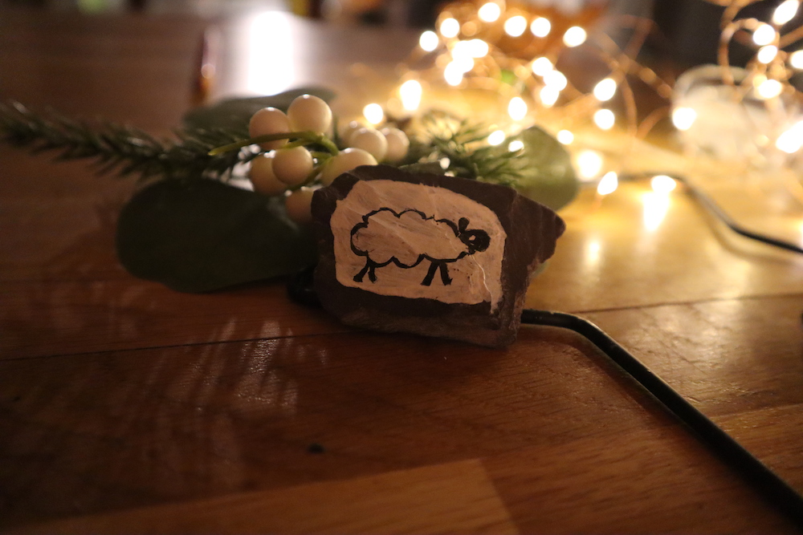
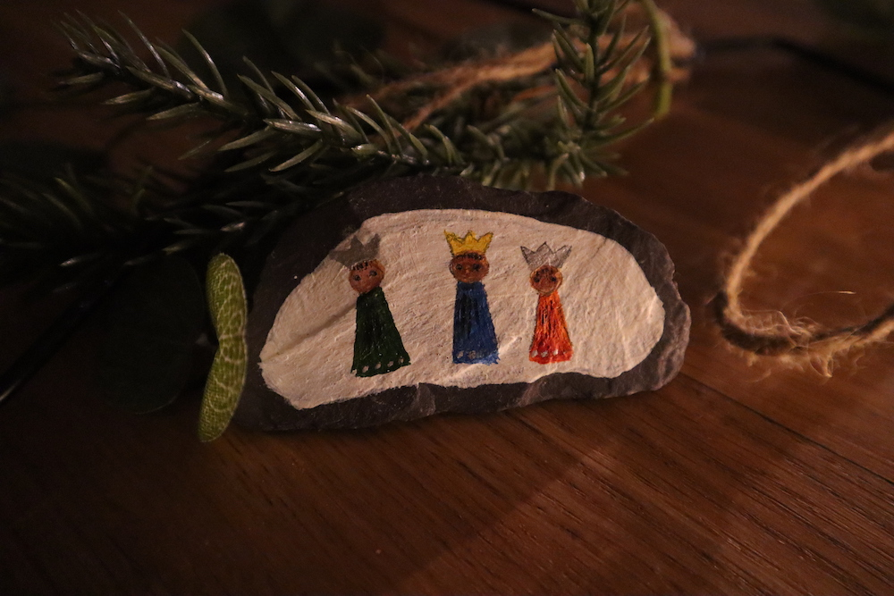
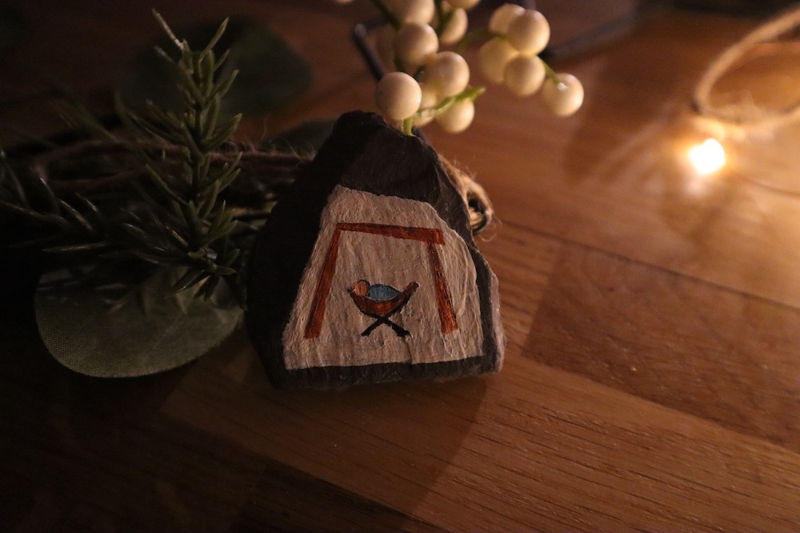

Hand-painted during lockdown by a group of volunteers of all ages, Nativity themed stones will be scattered across the village during the week before Christmas.
There are five stones to collect - a star, Mary + Joseph, a sheep, three Kings, and a baby Jesus - plus a book to go with them and a bag to keep them in. Bags and books will be distributed at school or can be collected from All Saints Church Porch, the Milk Shed, or the Pub.
When you have got your bag it’s time to go hunting for stones (perhaps combine it with doing the Village Christmas Trail, or with a stroll around the Advent Windows). Once you have a complete set you can take them home to display and use them to re-tell the story of Christmas. You could even send us a film of you telling the story, or a picture of your set of stones, for us to share below (make sure you have your family’s permission).
Quick note - each of these stones has been hand painted locally and so there are only a finite number. Please help us to include everybody by asking your children to only collect one set of stones each!








"Tell out my soul the greatness of the Lord"
Timothy Dudley Smith (based on Mary’s song in Luke 1 v 46-55)
If you would like to find out more about the story of Jesus this Christmas then you are welcome to join us at a service, or give us a call to speak to someone, or you can even e-mail us your postal address and we’ll deliver you a Bible to read.